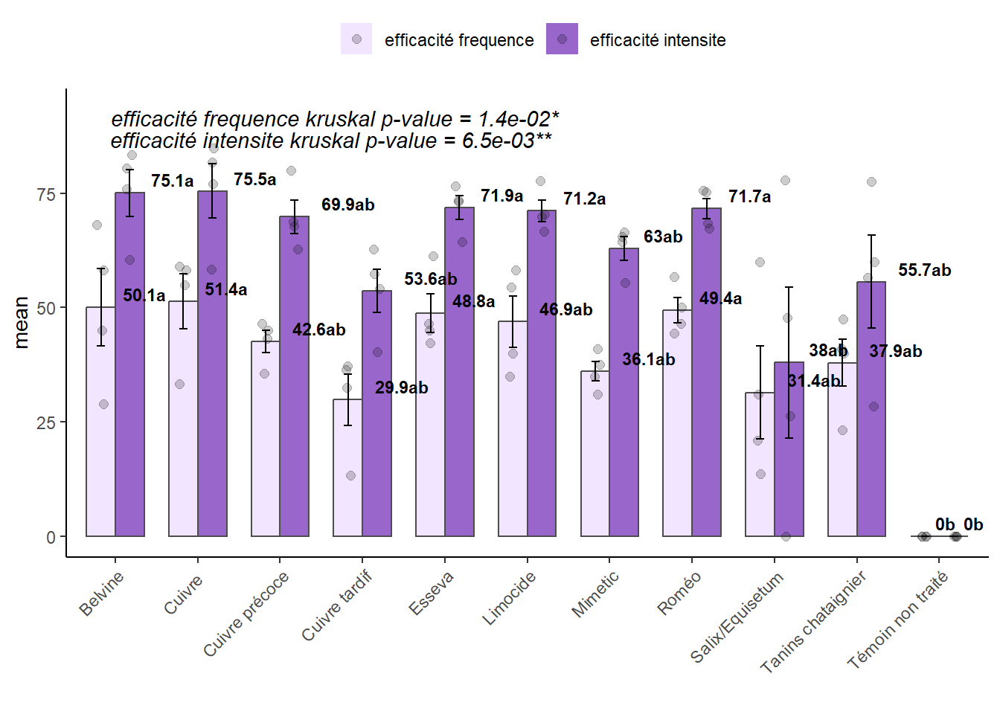
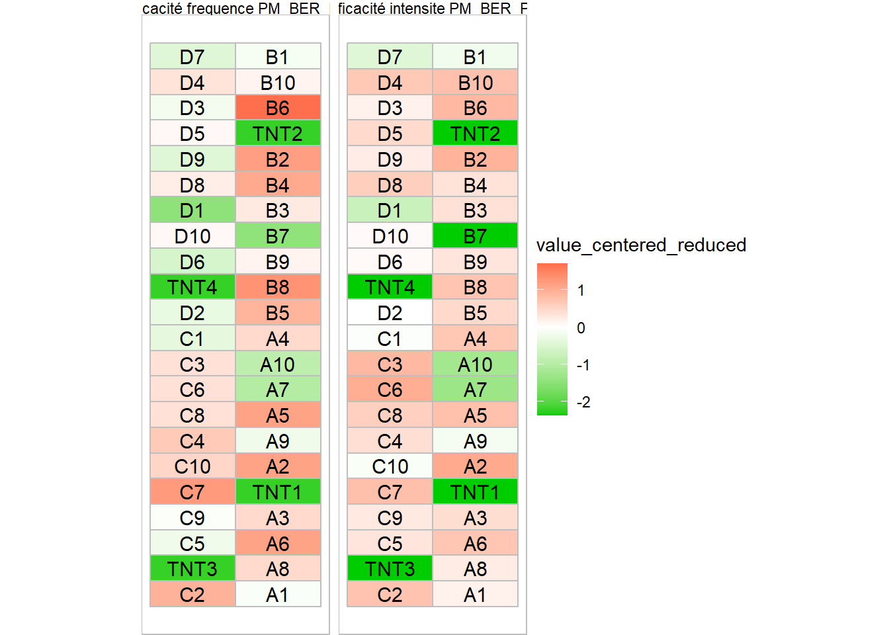

#install.packages("devtools") # if not already installed
devtools::install_github("vignevin/startbox")Introduction
Le package {startbox} est dédié à la gestion et à l’analyse des données d’essais en protection phytosanitaire, en particulier pour la vigne.
Principe de base
Les données sont stockées dans un fichier Excel standard, dont il est possible de télécharger un modèle avec la fonction get_template_excel().
Une analyse se déroule selon les étapes suivantes :
- Charger les données dans R
- Préparer les données
- Réaliser les analyses statistiques
- Visualiser les graphiques de résultats
Installation du package
Charger les données
Chargement des données dans l’environnement de travail
Les données sont chargées dans R dans un objet appartenant à la classe user_data, spécifique au package startbox. Cet objet contient les données brutes, mais aussi sert à stocker les données préparées et les résultats des analyses statistiques.
# Création d'un objet avec fichier Excel existant
# ici le fichier Excel est un fichier exemple fourni avec le package
mydata <- user_data$new(trial_file = system.file("extdata","standard_exemple.xlsx",package="startbox"))
#> 📄 Using provided Excel file: standard_exemple.xlsx
#> ✅ Sheet 'dictionary loaded
#> ✅ Sheet 'placette' loaded into metadata$placette.
#> ✅ Sheet 'modalite' loaded into metadata$modalite.
#> Column p_app_date converted with format %d/%m/%Y
#> ✅ Sheet 'ppp' loaded into metadata$ppp.
#> ⚠️ Sheet data_template is empty and not loaded
#> Column observation_date converted with format %d/%m/%Y
#> 🔁 Sheet already loaded: data_F1 → replaced.
#> Column observation_date converted with format %d/%m/%Y
#> 🔁 Sheet already loaded: data_F2 → replaced.
#> Column observation_date converted with format %d/%m/%Y
#> 🔁 Sheet already loaded: data_G1 → replaced.
#> Column observation_date converted with format %d/%m/%Y
#> 🔁 Sheet already loaded: data_G2 → replaced.
#> Column observation_date converted with format %d/%m/%Y
#> 🔁 Sheet already loaded: data_G3 → replaced.
#> Column meteo_datetime converted with format %d/%m/%Y
#> ✅ Sheet 'meteo' loaded into self$meteoPour adapter ce code à votre cas, modifier le paramètre trial_file avec le chemin de votre fichier Excel. Une fonction pratique est d’utiliser trial_file = file.choose() pour une sélection interactive du fichier.
Important
Un fichier Excel ouvert ne peut pas être chargé ni modifié par {startbox} : n’oubliez-pas de fermer votre fichier avant de lancer la fonction
user_data$new().
Accéder aux données chargées
Les données sont dans notre exemple stockées dans l’objet que nous avons appelé mydata.
Cet objet contient nos données, avec en particulier :
les données d’observations dans
obs_datales métadonnées, issues des feuilles Excel placette et modalité dans
metadata
# affichage des premières lignes des données d'observation data_F1_2024 :
head(mydata$obs_data$data_G1)
#> plot_id PM_BER_PC bbch_stage observation_date
#> 2 10A 0 BBCH 77 2024-06-25
#> 3 10A 0 BBCH 77 2024-06-25
#> 4 10A 60 BBCH 77 2024-06-25
#> 5 10A 30 BBCH 77 2024-06-25
#> 6 10A 0 BBCH 77 2024-06-25
#> 7 10A 0 BBCH 77 2024-06-25Préparer les données
Une fois les données chargées, il est nécessaire de les préparer avant analyse. Généralement, pour un essai en protection phytosanitaire, la fréquence et l’intensité de la maladie sont calculées par placette. La fonction prepare_data() réalise ce calcul par défaut, mais vous pouvez aussi le personnaliser (voir l’aide de la fonction).
Préparer les données à partir d’un jeu de données observation
prepare_data(mydata, df="data_G1", prep_name = "default_G1")
#> dataframe data_G1 found in observations data
#> variables found:PM_BER_PC
#> Variable choosenPM_BER_PC
#> plot_id: 10A,10B,10C,10D,1A,1B,1C,1D,2A,2B,2C,2D,3A,3B,3C,3D,4A,4B,4C,4D,5A,5B,5C,5D,6A,6B,6C,6D,7A,7B,7C,7D,8A,8B,8C,8D,9A,9B,9C,9D not in the reference plot description
#> flex automatically set to TRUE to try to find equivalence in plot_id such as 10A = A10
#> plot_id: 10A,10B,10C,10D,1A,1B,1C,1D,2A,2B,2C,2D,3A,3B,3C,3D,4A,4B,4C,4D,5A,5B,5C,5D,6A,6B,6C,6D,7A,7B,7C,7D,8A,8B,8C,8D,9A,9B,9C,9D not in the reference plot description
#> WARNING : at least one plot_id in the dataset was not found in the sheet placette (plot_desc in metadata)
#> flex merging for plot_id. 10A = A10 = a10
#> Prepared data saved in [data_user object]$prepared_data$default_G1
# df : le nom du dataframe à préparer)
# prep_name : le nom du tableau de données en sortie
Préparer les données à partir d’un jeu de données préparées
Ce cas de figure intervient généralement quand on souhaite calculer une efficacité. En effet, il faut d’abord calculer la fréquence et l’intensité par placette, puis calculer l’efficacité à partir de ces données.
prepare_data(mydata,
df="default_G1", # le nom du dataframe à préparer
prep_name = "eff_G1", # nom du dataframe en sortie
funs = list(efficacité = efficacy), # calcul de l'efficacité
tnt_mode = "block")
#> dataframe default_G1 found in prepared data
#> plot_id: 10A,10B,10C,10D,1A,1B,1C,1D,2A,2B,2C,2D,3A,3B,3C,3D,4A,4B,4C,4D,5A,5B,5C,5D,6A,6B,6C,6D,7A,7B,7C,7D,8A,8B,8C,8D,9A,9B,9C,9D not in the reference plot description
#> flex automatically set to TRUE to try to find equivalence in plot_id such as 10A = A10
#> generation of block_association table
#> [1] "block TNT used for calculation of efficacy"
#> flex merging for plot_id. 10A = A10 = a10
#> Prepared data saved in [data_user object]$prepared_data$eff_G1Accéder aux données préparées
Les données préparées sont accessibles dans mydata, sous forme d’une liste prepared_data
head(mydata$prepared_data$eff_G1)
#> plot_id calculation mean_tnt value nb clean_id
#> 1 A1 efficacité frequence PM_BER_PC 86.00 37.20930 1 A1
#> 2 A1 efficacité intensite PM_BER_PC 23.08 62.73830 1 A1
#> 3 A10 efficacité frequence PM_BER_PC 86.00 23.25581 1 A10
#> 4 A10 efficacité intensite PM_BER_PC 23.08 28.50953 1 A10
#> 5 A2 efficacité frequence PM_BER_PC 86.00 58.13953 1 A2
#> 6 A2 efficacité intensite PM_BER_PC 23.08 84.83536 1 A2
#> xp_trt_code block_code plot_x plot_y plot_n plot_desc expe_id
#> 1 1 A 2 1 7 <NA> IFV30_teisso_2024
#> 2 1 A 2 1 7 <NA> IFV30_teisso_2024
#> 3 10 A 2 10 7 <NA> IFV30_teisso_2024
#> 4 10 A 2 10 7 <NA> IFV30_teisso_2024
#> 5 2 A 2 6 7 <NA> IFV30_teisso_2024
#> 6 2 A 2 6 7 <NA> IFV30_teisso_2024
#> xp_trt_name xp_trt_desc
#> 1 Cuivre tardif cuivre 2 semains après symptômes
#> 2 Cuivre tardif cuivre 2 semains après symptômes
#> 3 Tanins chataignier <NA>
#> 4 Tanins chataignier <NA>
#> 5 Cuivre cuivre à partir de symptômes
#> 6 Cuivre cuivre à partir de symptômesAnalyser les données
Une fois le jeu de données préparé, il est possible de réaliser l’analyse statistique.
Réaliser l’analyse
test_stats(mydata, prep_data = "eff_G1")
#> for efficacité frequence PM_BER_PC Shapiro test p-value is greater than 0.05 : the model residuals appear to follow a normal distribution
#> for efficacité frequence PM_BER_PC Bartlett test p-value is greater than 0.05 : no significant differences in variance between groups detected
#> for efficacité intensite PM_BER_PC Shapiro test p-value is less than 0.05 : the model residuals do not appear to follow a normal distribution
#> for efficacité intensite PM_BER_PC Bartlett test p-value is less than 0.05 : significant differences in variance between groups are detected
#> Stats saved in : [data_user object]stats$eff_G1Afficher les résultats
Les résultats des analyses statistiques sont stockées dans mydata, dans une liste stats. Pour chaque exécution de test_stats(), un nouvel élément est ajouté à la liste. Chaque élément contient :
prep_data : le nom du jeu de données préparées qui a été analysé
df.stats : une table avec les tests réalisées et les p-values calculées pour chaque variable
df.grp_means : une table avec les moyennes par modalités et les groupes statistiques
head(mydata$stats$eff_G1$df.grp_means)
#> mean factor_level std r se LCL UCL Min
#> 1 29.85157 Cuivre tardif 11.201333 4 5.814253 17.97728 41.72586 13.33333
#> 2 31.41943 Salix/Equisetum 20.356856 4 5.814253 19.54514 43.29371 13.63636
#> 3 36.10098 Mimetic 4.141485 4 5.814253 24.22669 47.97527 31.11111
#> 4 37.91623 Tanins chataignier 10.329178 4 5.814253 26.04194 49.79051 23.25581
#> 5 42.56225 Cuivre précoce 4.865451 4 5.814253 30.68796 54.43654 35.55556
#> 6 46.92125 Limocide 11.165398 4 5.814253 35.04696 58.79554 35.00000
#> Max Q25 Q50 Q75 factor
#> 1 37.20930 27.70833 34.43182 36.57505 xp_trt_name
#> 2 60.00000 19.10677 26.02067 38.33333 xp_trt_name
#> 3 40.90909 33.94057 36.19186 38.35227 xp_trt_name
#> 4 47.50000 35.81395 40.45455 42.55682 xp_trt_name
#> 5 46.51163 41.27525 44.09091 45.37791 xp_trt_name
#> 6 58.13953 38.75000 47.27273 55.44397 xp_trt_name
#> calculation groups rank
#> 1 efficacité frequence PM_BER_PC a NA
#> 2 efficacité frequence PM_BER_PC a NA
#> 3 efficacité frequence PM_BER_PC a NA
#> 4 efficacité frequence PM_BER_PC a NA
#> 5 efficacité frequence PM_BER_PC a NA
#> 6 efficacité frequence PM_BER_PC a NAAfficher les graphiques
Barplot
plot_xpbar(mydata,stat = "eff_G1")
Heat map
plot_xpheat(mydata,stat = "eff_G1")